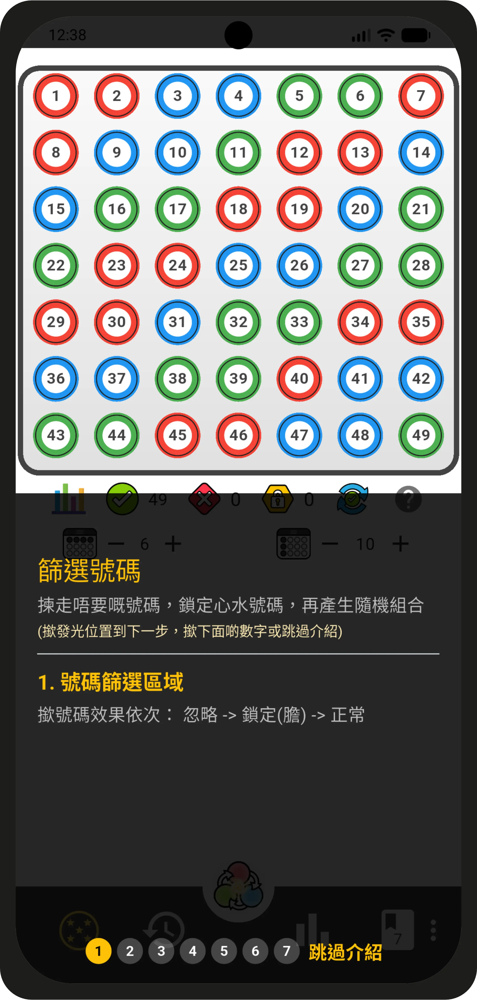
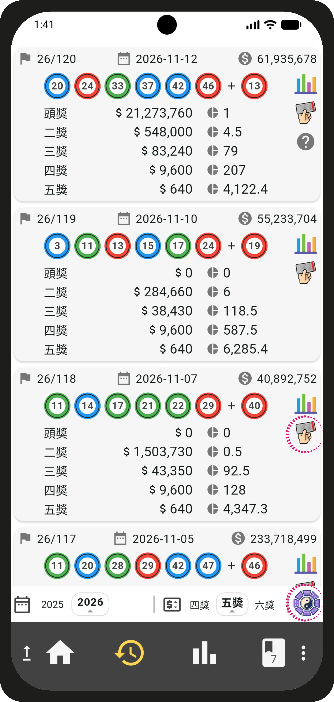
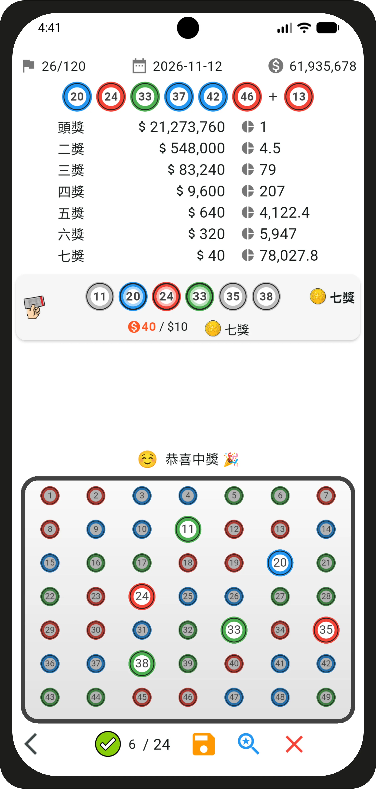
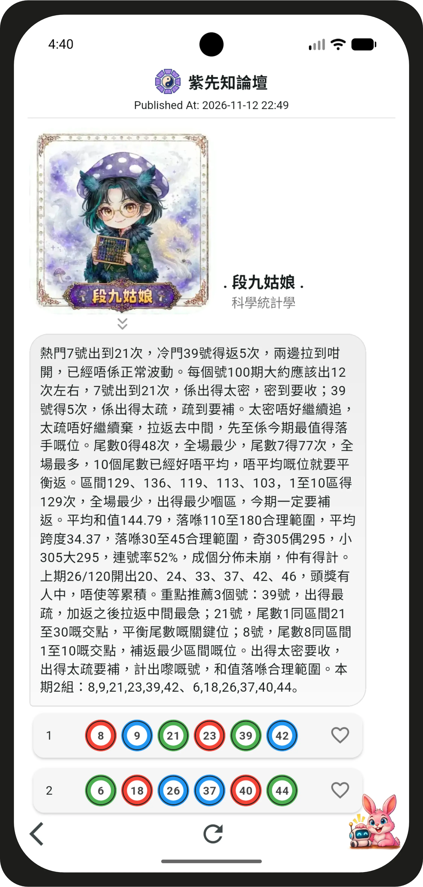
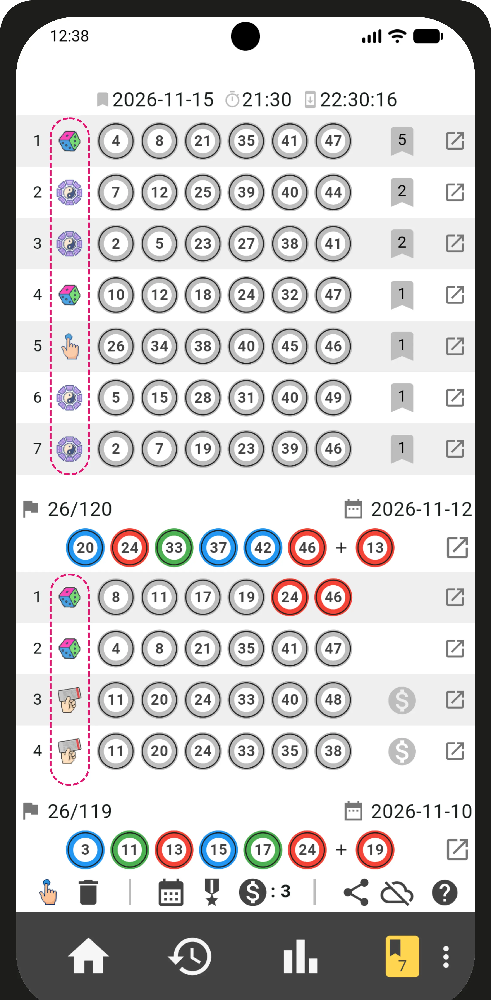

重大更新：版本 1.3.0
Major Update: Version 1.3.0
2026-11-15
請到商店搜尋 六合彩統計 或 Mark 6 Stats 更新
Please search Mark 6 Stats in App Store / 【entity-Google Play¦canonical_name=Google Play】 to update
詳細介紹
/ Guided Introduction
PAGE 1
新增逐步詳細介紹，逐一說明各按鍵功能與操作流程。
New step-by-step guided introduction, explaining each button's function and operation flow one by one.

新增頁面
/ New Pages
PAGE 2
新增兩個頁面：手動對獎和紫先知論壇。
Two new pages added: Manual Prize Check and Purple Prophet Forum.
每個紀錄都有手動對獎的入口按鍵。右下的八卦形按鍵可進入紫先知論壇。
Each record has an entry button for Manual Prize Check. The Bagua-shaped button at the bottom right enters the Purple Prophet Forum.

手動對獎
/ Manual Prize Check
PAGE 3
輸入已手上記錄的號碼，點擊數字即時比對當期開獎結果並顯示中獎金額。
Enter the numbers you have recorded, tap the numbers to instantly compare with the current draw result and display the prize amount.
同樣也有搜尋相似紀錄和記錄儲存功能。
Also includes searching for similar records and saving records.

紫先知論壇
/ Purple Prophet Forum
PAGE 4
紫先知論壇運用 AI 綜合分析歷史開獎數據，有8位分別代表不同玄學術數的角色進行推算。
The Purple Prophet Forum uses AI to comprehensively analyse historical draw data, with 8 characters each representing a different metaphysical discipline for calculation.
從各玄學術數角度提供分析與參考號碼，提供給有選擇困難的使用者多個途徑獲得參考。
Providing analysis and reference numbers from various metaphysical perspectives, offering users who have difficulty choosing multiple ways to get references.

號碼圖標
/ Number Icons
PAGE 5
每個號碼的圖標代表於不同頁面加入的號碼。
Each number's icon represents the page where the number was added.
例如骰子代表隨機產生、八卦代表論壇收藏、手指代表手動輸入，一眼即可辨識。
For example, a dice represents randomly generated, Bagua represents forum favourites, and a finger represents manual input — identifiable at a glance.

⭐⭐⭐⭐⭐
請開啟Google Play，搜尋：
六合彩統計
Mark 6 Stats
點擊進入頁面完成更新，順便請給予五星好評！
（當然留待下次再給予評論亦可，因為此應用程式的開發永不止於此……）
Search "Mark 6 Stats" on App Store / Google Play to update and please leave a five-star review!
(Or feel free to leave a review next time — development for this app never stops...)